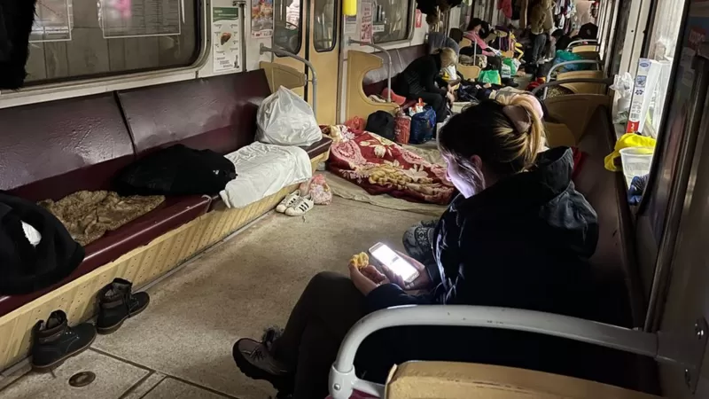
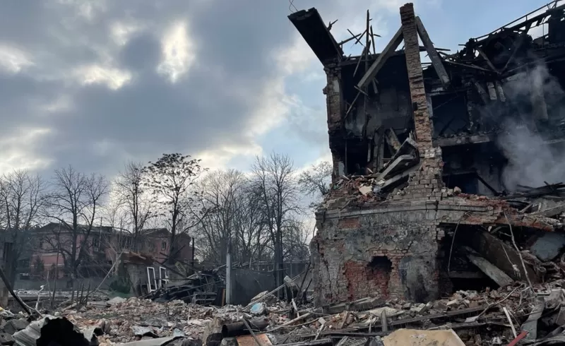
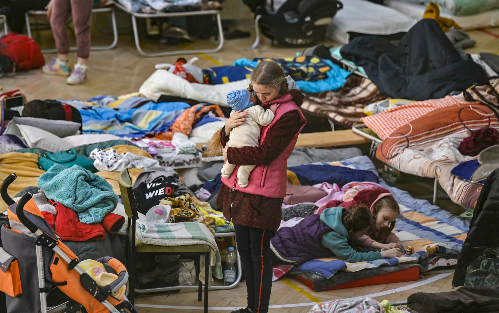

====================================================================================================
Many Ukrainian people still live in panic. According to the UN STATEMENTS :"The military has used explosive weapons with wide-area impact — including missiles, heavy artillery shells and rockets, and airstrikes — in or near populated areas. Mass destruction of private homes, multi-storey residential buildings, administrative buildings, medical and educational facilities, water stations, electricity systems, with catastrophic effects on civilians and their human rights, including their rights to health, food, water, education and housing".